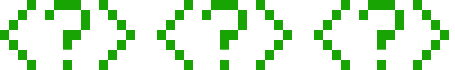
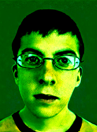
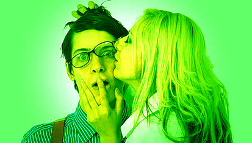
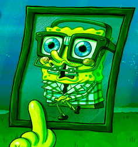
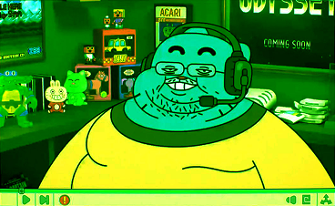

Do you know the story behind the tragedy of Order 66? Do you remember every Robin's name by
heart? Do you play on the computer so that day merges with night?
It's clear - you're a NERD!
Maybe it used to sound offensive, but times have changed. Today, a nerd is a person who is very passionate about their interests, such as science, computers, games, or comics. Sometimes a little withdrawn, but very intelligent and erudite in their subject.





Nerd memes are still relevant. Sometimes people argue about who is the real "super nerd", some girls like them, and someone makes funny pictures, making fun of their tricks.
Nerds are actually pretty cool. Being a nerd means being genuinely passionate about your interests, learning deeply, and not being afraid to stand out from the crowd. There's no shame in that — it's a display of uniqueness and true passion that makes you interesting and strong in your field.